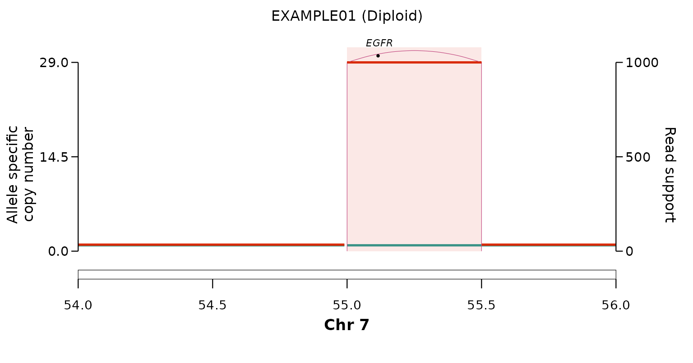

plot_sv_linear() draws allele-specific copy number,
structural-variant arcs, the karyotype ideogram and gene labels for one
or more loci on a single concatenated x-axis. It is a general-purpose
CN/SV viewer, not amplification-only.
A simple plot
The bundled ex_plot_inputs is a synthetic EGFR
amplicon on chr7 (sample "EXAMPLE01").
karyotype and gene_coord are omitted, so the
bundled hg38 references are used.
p <- plot_sv_linear(
sample = "EXAMPLE01",
cnv_data = ex_plot_inputs$cnv_data,
sv_data = ex_plot_inputs$sv_data,
wgd_data = ex_plot_inputs$wgd_data,
chromosome = "chr7",
chromosome_range = matrix(c(54e6, 56e6), nrow = 1)
)
p
By default the plot is returned as a ggplot object and
nothing is written to disk. Pass outdir = "." to also save
a publication-ready PDF. Omit
chromosome/chromosome_range and
plot_sv_linear() auto-detects the amplified loci; pass
loci for explicit windows.
Adding an SNV panel: kataegis
Supplying snv_data adds a second panel of the sample’s
small mutations beneath the copy-number / SV panel, on the same genomic
x-axis. With the default snv_y = "imd" it is a rainfall
plot — each SNV sits at its intermutation distance to the previous
one — so kataegis (localised hypermutation) appears as
a tight cluster of points dropping toward the bottom of the panel.
The bundled ex_snv places an APOBEC-like kataegis shower
over the EGFR amplicon, with a few scattered background SNVs for
contrast:
plot_sv_linear(
sample = "EXAMPLE01",
cnv_data = ex_plot_inputs$cnv_data,
sv_data = ex_plot_inputs$sv_data,
wgd_data = ex_plot_inputs$wgd_data,
chromosome = "chr7",
chromosome_range = matrix(c(54e6, 56e6), nrow = 1),
snv_data = ex_snv # snv_y = "imd" (rainfall) by default
)
The kataegis cluster sits at ~100 bp–1 kb intermutation distance
inside the amplicon, well below the scattered background mutations.
snv_y = "vaf" or "cn" switch the panel to
variant-allele frequency or SNV copy number instead. See
?plot_sv_linear for the full set of controls, and the reconstruction article for the
read-support-stratified plot_sv_reconstruction().